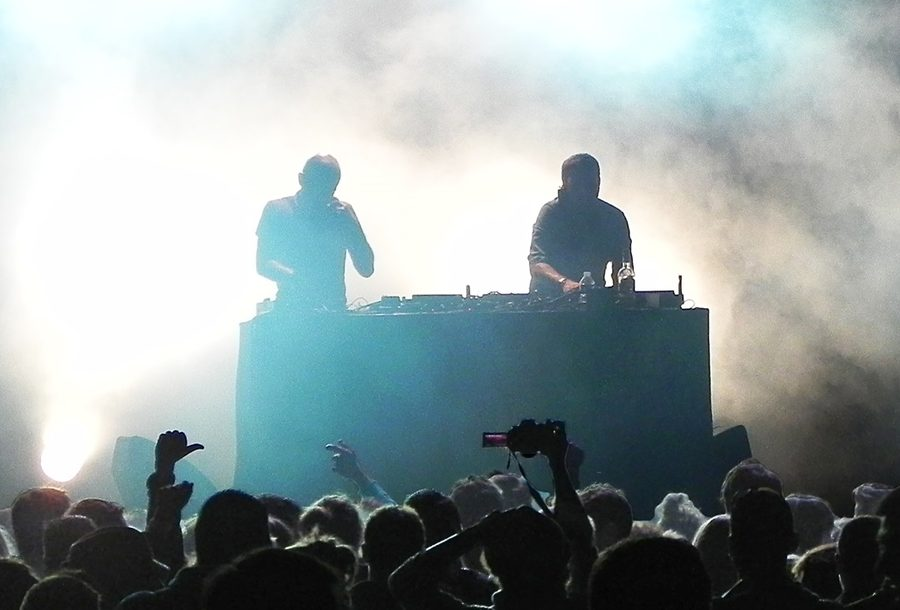

Field Day gets bigger with Cassius + Phenomenal Handclap Band



Sydney’s iconic Field Day finally took the wraps off its lineup earlier this month, featuring acts like 2manydjs, Major Lazer Soundsystem, LCD Soundsystem and more, and promoters Fuzzy have just let slip on a few more acts who will be on the bill when it returns to The Domain this coming New Years Day.
House veterans Cassius will be playing a ‘Dex n FX’ set, while Brooklyn psychedelic rock collective the Phenomenal Handclap Band will also be joining for a live performance alongside Sony inthemix50 high-rankers The Aston Shuffle. Bring it on we say, you can never have too much party!
Field Day is proudly supported by inthemix in 2010! Check out our Festival Page for more info. Tickets available midday Thursday 24th September from www.fuzzy.com.au.